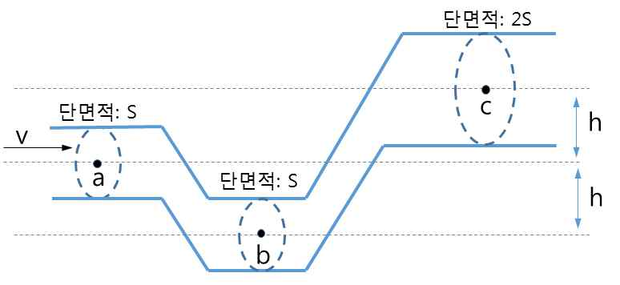

문제 4
4-1
단계 1
전기용량이 각각 C1, C2인 두 개의 평행판 축전기가 있다.
1) 축전기를 직렬 연결했을 때 합성 전기 용량은?
2) 축전기를 병렬 연결했을 때 합성 전기 용량은?
4-2
단계 2
베르누이 법칙을 따르는 밀도가 \(\rho\)인 유체가 아래와 같은 관을 따라 왼쪽에서 오른쪽으로 흐르고 있다. a에서의 유체 속력은 v 이다.

1) 베르누이 법칙을 따르는 유체의 성질은?
2) 베르누이 법칙을 수식으로 쓰면?
3) 유체의 속력은 a와 b중에서 어디가 빠른가?
4) a와 c에서 유체의 압력이 같게 될 v의 조건은?
4-3
단계 3
베르누이 법칙을 유도하라.